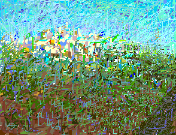
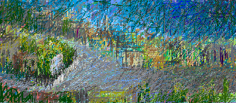
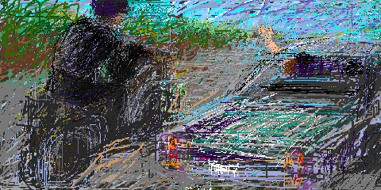

We were anxious as we drove to you. My friend pointed out the total ethnic cleansing of the surrounding area. "No sign of Palestine remains here" she said. My anger flashed. I reject this Israeli brutality as final. I saw the name of an Arab town on a road sign. It justified my immediate objection. But I could feel the stench of brutality in these scenes of Israeli crime. Images of their acts flashed in my head. And then from far away we saw you on a hill. As the first of your many minarets appeared, we voiced joy and relief.

Kafr Qasem! You move me. You are a sign. You are a beacon in the dark - a lighthouse for troubled travelers. You fill the painful void of Palestine in my heart. Grow and blossom. I came to teach my art but received a better lesson on heroism. I did not expect to find so much beauty and the precious traditions of Palestine so solidly embraced and preserved. I feel again the power of our culture and determination. This is a precious gift.
Our meeting place was the monument to the victims. We drove past it. We returned and were found by our hosts who welcomed us with flowers. I smiled from ear to ear at their beauty. They too were flowers. Then together, we went to the memorial stone located at the original scene of the massacre at Kafr Qasem. There I placed my flowers. I looked with dismay at the quantity of names etched there in the stone and was told that there were 49. But really there should be 50 because one of the victims was a woman in the ninth month of her pregnancy.

After the day's activities, a young medical student escorted our departure on his motor cycle. Having arrived on our own the long way around, we were grateful to be shown the unmarked short way. We hated to part from him and his wonderful town. For goodbye he said: "Please give our message to all Palestinians. Tell them to come back to their homes and lands."
One of the many missing services for Arabs under Israeli rule is adequate signage to towns and villages still occupied by Arabs. Of course there is good signage to the vast majority of Israeli towns, and cities which are, in fact, occupied Arab towns and cities. Israelis do not provide services to Arab towns even while they collect heavy taxes and apply heavily the oppressive control by police and military forces.
Do you know about Kafr Qasem? This was a village of approximate 1500 people in 1956 when the French and the British helped Israel attack the Suez. Under the cover of war, the Israeli forces decided to continue what had been done in 1948. That is the brutal eviction of Palestinian Arabs from their homes and lands of Palestine. These Israelis were after all building their little new state by destroying ours. They felt that they had the right to kill, rape, rob, and torture. Their genocidal acts describe them well.
It was the evening of October 29, 1956 when Israelis approached Kafr Qasem to kill unarmed workers returning home after work. The massacre was cold blooded, premeditated, ordered from above, and part of Israeli State policy.
The brutality of the act coupled with the isolation and social oppression of the village created deep psychological and emotional wounds. In a struggle to survive the general destruction applied by Israel to Palestinian life and culture, Kafr Qasem reacted by giving life. Having been a village of approximately 1500 residents in 1956, it has become now become a town of 15,000 in this year of 1999. Grow Kafr Qasem. You are a great gift.
My Grandmother... The Town of Beisan... The Arab City of Jerusalem... Sabah Told Me... My Home in Yafa... Khader Told Me... Olives of Palestine... Our Students... A Taxi Ride in Bethlehem... Written by Doctor Fathihe Saudi... Hasan Told Me... A Visit to Kafr Qasem... Artist of Kafr Qasem...The Massacre at Kafr Qasem (not yet ready)
Tayseer Barakat, painter... Rana Bishara, painter and installation artists... Sari Khouri, painter... Abdel Tamam, painter... Vera Tamari, ceramist and painter... Adnan Yahya, painter and graphic artists...